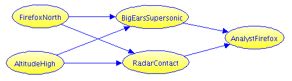

We use Probability Calculator to solve the SWARM Firefox problem. First we will re-state the problem here so the page is self-contained.
Problem Description
Preface
In the (mediocre) 1982 movie “Firefox” (based on the decent 1977 thriller), US pilot Mitchell Gant steals the Firefox, a fictional top secret supersonic stealth aircraft developed by the Soviet Union. He initially heads south ensuring he is seen by a commercial airliner before using the stealth properties of the plane to turn north unseen. His plan is to follow the Ural mountains to a clever refueling rendezvous before heading west. Here is our adaptation.
The Problem
Imagine you are the Soviet general in charge of the northern defenses. You know Gant was last seen heading south. However, your top analyst says Gant is trained in evasion, and suspects it was a diversion and that he is heading north. Here we will depart from the movie a bit to make an interesting but tractable decision problem.
Gant has to go either north or south. You judge there is a 50% chance Gant went north, probably following the Ural mountains. Your team estimates it is three times as likely he is flying at low altitude than at high (i.e. odds are 3:1 in favor of low).
You have two detection systems.
Acoustic detectors, known as “Big Ears.” These can detect a supersonic aircraft by picking up the sonic boom. Big Ears detects 95% of low-altitude supersonic targets, and 50% of high-altitude targets. It is unlikely any other aircraft would set them off right now, so there is only a 1% false alarm rate.
Radar. You know this radar works poorly against a target like Firefox. At best it has a 30% detection, when Firefox is up high presenting a broad target on a clear background. At low altitudes, detection is only 10%. There is always a 5% false alarm rate, including both system noise, other aircraft, and occasional bird flocks.
The sensors are been linked by a simple rules-based system made for detecting possible NATO stealth test flights in the north (the south is someone else’s problem):
- If Radar reports no contact, and BigEars report a supersonic footprint, say “Stealth”.
- Otherwise, say “No Stealth”.
Your top analyst warns that this system was not designed for stealth as good as Firefox. There is little time to recalibrate for its overly conservative rules, so she intuitively adjusts:
- If the system says “Stealth” she will say “Firefox”.
- Else if the radar reports a contact, she will most likely (75%) say that it is “Firefox.”
- Otherwise, she is only 20% likely to say “Firefox”.
Question 1
Your analyst says “Not Firefox”. What is the chance Gant was nevertheless in the north? Compare that with taking a non-stealth reading straight from the rules system?
Question 2
Gant knows he is taking the northern route. Which altitude would minimize his chance of being detected?
Probability Calculator
This is the same problem described in Solving Probability Puzzles with Bayes Nets and in the SWARM Demo Platform Firefox Problem, but we analyze it slightly differently.
- Variable names reflect Calculator's requirement that everything is True/False. We use similar variable names as in the Demo Platform, but ...
- We omit the SystemStealth variable just because we can: Calculator makes it easy to query that condition directly.

- FirefoxNorth and AltitudeHigh describe Gant's location and height. True if Gant goes north, or respectively if Gant flies at high altitude.
- BigEarsSupersonic and Radar are true when those sensors detect something.
- AnalystFirefox is true when the analyst says "Firefox".
Time to use the calculator.